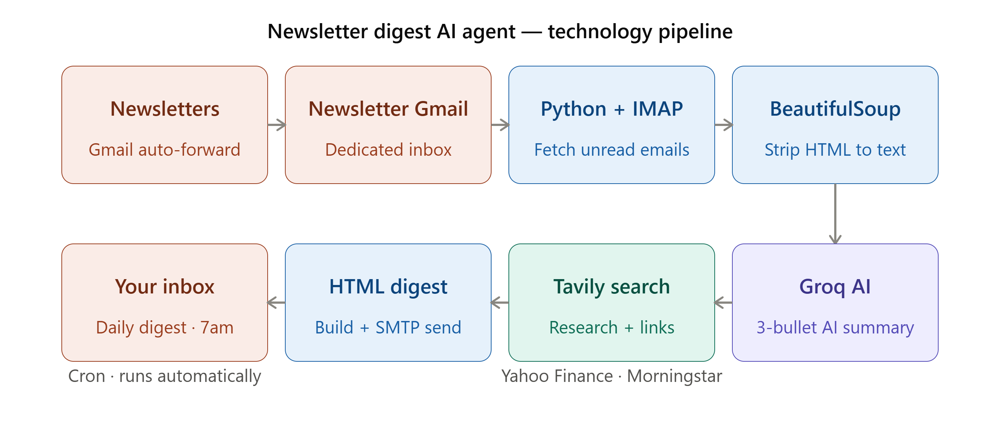

Product Manager · AI Builder
Senior Product Manager who scopes and builds working, dev-ready prototypes — with a deliberate eye on cost, privacy, requirements, and technical tradeoffs.
An automated pipeline that summarizes unread newsletters based on my personal interests, so nothing worth reading gets lost in the AI news pile.
Newsletters pile up unread — valuable content gets lost with no easy way to scan summaries before deciding what's worth reading.
Connects to a dedicated Gmail inbox via IMAP, pulls unread newsletters, strips them to clean text, summarizes each with AI, enriches with related research links, and delivers a daily HTML digest by email — replacing manual newsletter triage with an automated pipeline.

A local-only dashboard built around one hard constraint: financial data never leaves the device.
Wanted a monthly view of net worth and account balances without handing financial data to any third-party app or cloud service.
Used Claude to design and build around a non-negotiable privacy requirement — translating "data must never leave the device" into concrete guardrails: no cloud calls, no browser storage, local-only parsing.
A single self-contained HTML dashboard that parses a monthly spreadsheet export entirely in the browser and renders account and net-worth charts — no login, no server, no data transmission.
An on-demand research assistant that consolidates data and news into one readable report.
Researching a stock or ETF before investing means manually checking multiple sites and reading scattered news — a repetitive, time-consuming process.
Used Claude to scope the full system, weigh data-source tradeoffs like free API limits versus paid reliability, and design the synthesis logic that turns raw data into a readable summary.
Triggered via a Telegram message with a ticker and time horizon, the agent pulls financial data and recent news, then uses Claude to synthesize a clean, brief-style summary delivered by email.